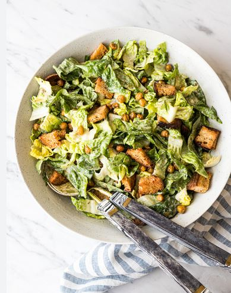

Beim Caesar Salad handelt es sich um eine Kreation aus dem Grenzraum von Kalifornien und Mexiko. In den 1920er Jahren gab es in der mexikanischen Stadt Tijuana ein Restaurant mit dem Namen Caesars Place. Betrieben wurde es von einem italienischen Einwanderer namens Cesare Cardini.
| Benötigte Menge | Artikel |
|---|---|
| 1 Kopf | Römersalat(e) |
| 50 g | Parmesan, frisch gerieben |
| 1 | Knoblauchzehe(n) |
| 2 Gramm | Paprikapulver |
| 1 | Ei(er), roh |
| 3stk | Knoblauchzehe(n), in Stücke geschnitten |
| 2 TL | Dijonsenf |
| ½ | Zitrone(n), Saft davon |
| 150 ml | Keimöl o. Ä. - kein Olivenöl! |
| Nach Bedarf | Pfeffer aus der Mühle |